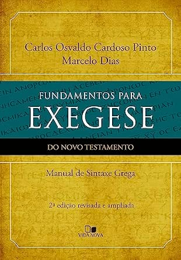

Faculdade Batista Logos
Instituição em que o idealizador deste guia estudou Grego Bíblico e Exegese do Novo Testamento.
Guia Integrado de Exegese
Um percurso para compreender antes de concluir, demonstrar antes de afirmar e aplicar sem violentar o texto.
Um guia com base em obras reconhecidas e confiáveis para uma abordagem histórico-gramatical das Escrituras.
Este guia organiza conceitos, procedimentos e ferramentas para apoiar a leitura responsável das Escrituras. Ele não substitui uma formação teológica estruturada. O estudo dos idiomas bíblicos, da hermenêutica e da exegese é melhor desenvolvido com currículo progressivo, avaliação, pesquisa bibliográfica e acompanhamento de professores e mentores. Seguem duas recomendações do curador, escolhidas por sua orientação confessional, seriedade didática e experiência pessoal de formação:
Instituição em que o idealizador deste guia estudou Grego Bíblico e Exegese do Novo Testamento.
Consulte a AIBREB para encontrar seminários e faculdades de teologia e verificar opções adequadas à sua formação.
O guia apresenta uma sequência didática, mas a investigação real é iterativa: novas observações lexicais, textuais, históricas e teológicas frequentemente exigem retorno e revisão de etapas anteriores. Use-o como curso sequencial ou ambiente de consulta.
De fundamentos e crítica textual até síntese e aplicação.
Vá direto a idiomas, diagramas, falácias ou checklists.
Diferencie o certo, o provável, o possível e o especulativo.
Interpretar é buscar a intenção comunicativa historicamente acessível por meio do texto, respeitando seus meios humanos de comunicação e sua natureza como Escritura.
A inspiração não elimina idioma, gênero, contexto, estilo ou circunstância. Esses meios participam da comunicação.
Observação: o que está presente? Interpretação: o que comunica? Aplicação: como orienta hoje?
Temporal, cultural, histórica, geográfica, linguística e literária.
Reverência e obediência não substituem método; método não substitui humildade e disposição para revisão.
Argumentos podem soar técnicos e ainda assim falhar. O intérprete responsável torna explícito o caminho entre dado, inferência e conclusão.
Etimologia, sentidos posteriores e todas as acepções do léxico não devem ser importados para uma ocorrência.
Aoristo, voz média, artigo ou caso não produzem conclusões teológicas automáticas.
Evite falso dilema, evidência seletiva, non sequitur, falsa analogia e apelo indevido à autoridade.
Reconstruções históricas e motivações precisam de evidência independente.
Variantes surgiram durante a transmissão manuscrita. A crítica textual avalia testemunhos e probabilidades para recuperar a forma mais antiga alcançável.
Papiros, unciais, minúsculos, lecionários, versões e citações patrísticas.
Omissão, adição, substituição, transposição; alterações acidentais ou intencionais.
Localize a variante, separe leituras, associe testemunhos e consulte a legenda da edição.
O contexto impede que palavras e costumes sejam arrancados do ambiente em que comunicavam.
Autor, destinatários, data, ocasião, relações políticas e situação religiosa.
Família, economia, instituições, costumes, objetos, honra, vergonha e práticas comunitárias.
Parágrafo, livro, estrutura, argumento, repetição, contraste e gênero.
Lugar, rotas, relevo e distâncias apenas quando esclarecem o texto.
Hebraico e grego não revelam códigos secretos. Eles permitem examinar relações, ambiguidades e escolhas que toda tradução precisa interpretar.
Ross conduz de sinais e sons a morfologia, sintaxe e leitura de textos.
Rega forma a base; Wallace leva da morfologia à sintaxe exegética.

Sinais → formas → sintaxe → texto.

Leitura → morfologia → uso instrumental.

Sintaxe → categorias → decisão exegética.

Sintaxe grega → estrutura da oração → diagramação exegética.
Leitura, vocabulário, morfologia, sintaxe, contexto, discurso, prática e revisão.
Não imponha o sistema temporal português ao hebraico nem categorias gregas diretamente ao hebraico.
Alfabeto, vogais massoréticas, sílabas, shewa, acentos, guturais e letras quiescentes. A transliteração é ponte, não destino.
Gênero, número, artigo, adjetivos, pronomes, preposições, sufixos e cadeia construta.
Raiz, perfeito e imperfeito, formas não finitas, Qal, Nifal, Piel, Pual, Hitpael, Hifil, Hofal e verbos fracos.
Orações nominais e verbais, ordem, waw, sequência narrativa, primeiro plano e pano de fundo.
Alfabeto, pronúncia, sílabas, acentos, espíritos e sinais.
Casos, declinações, artigo, adjetivos, pronomes e preposições.
Tempos/aspectos, vozes, modos, verbos contraídos e em -μι.
Particípios, infinitivos, sujeito acusativo e condicionais.
Pressupõe morfologia básica. Sua pergunta não é apenas “que forma?”, mas “que função exerce aqui e que diferença faz?”.
Casos, artigo, adjetivos, pronomes e preposições.
Pessoa, número, voz, modo, tempo/aspecto, infinitivo e particípio.
Causa, propósito, resultado, condição, concessão, comparação e volição.
O manual funciona como ponte entre a gramática grega e a exposição do texto. Ele organiza a sintaxe das classes de palavras e propõe a diagramação como instrumento para visualizar regência, dependência e hierarquia.
Casos, artigo, adjetivos, pronomes e preposições são estudados conforme sua função na oração, não apenas como paradigmas.
Tempo/aspecto, voz, modo, infinitivos e particípios são relacionados à predicação e à progressão do pensamento.
Coordenação, relativas, substantivas, temporais, causais, finais, consecutivas, condicionais e concessivas.
Identificar núcleos, ligar modificadores e explicitar as relações lógico-semânticas antes de formular a síntese.
Use a edição crítica e marque a unidade.
Verbos, formas nominais, conectores e formas não finitas.
Orações, regência, concordância, ordem e escopo.
Compare categorias, traduções e alternativas.
Tradução de trabalho, impacto exegético e grau de certeza.
O Módulo 5 identifica formas e funções; este módulo, apoiado no sistema simples de LaSor e na proposta sintático-exegética de Pinto–Dias, torna a hipótese estrutural visível, comparável e revisável.
Verbo no centro, linha principal para a predicação e linhas distintas para modificadores, coordenação e subordinação.
A diagramação reúne as funções sintáticas e evidencia o fluxo lógico da passagem, servindo de ponte para a interpretação e a exposição.
ὁ μαθητής | ἐπίστευσεν
/ εἰς τὸν κύριον
│
└── ἀκούσας | τὸν λόγον
sujeito | VERBO PRINCIPAL
/ complemento preposicional
│
└── particípio adverbial | objetoSujeito, verbo, objeto e predicativo formam o esqueleto.
Modificadores ficam sob o termo governante; coordenação e subordinação recebem ligações distintas.
Particípios e infinitivos aparecem ligados à função que exercem.
Quando houver ambiguidade, desenhe duas análises e compare seu poder explicativo.
No Módulo 6, analisamos relações dentro das orações. Agora observaremos como orações e proposições formam parágrafos, argumentos, cenas e unidades discursivas.
O texto integral é dividido em unidades de sentido. A proposição dominante permanece à esquerda; explicações e subordinadas recebem recuo. Rótulos podem indicar causa, propósito, condição ou contraste.
AFIRMAÇÃO Deus deu o Filho
CAUSA porque amou o mundo
PROPÓSITO para que todo aquele que crê
não pereça,
mas tenha vida eterna.Simples, legível, preserva o texto e funciona bem em mobile, aulas e exposição.
Mostra menos detalhes morfológicos e pode ocultar as razões que sustentam cada recuo.
Cada predicação é tratada como proposição. Depois, explicitam-se as relações lógicas: fundamento, causa, explicação, propósito, resultado, condição, concessão, meio, contraste ou inferência.
Revela premissas, conclusões e a proposição dominante; excelente para epístolas e discursos.
A classificação já interpreta o texto e pode dar precisão artificial a relações realmente ambíguas.
O texto é dividido em unidades informacionais ou retóricas, frequentemente uma predicação ou expansão por linha. O método preserva ritmo, paralelismo e encaixamento.
Paulo,
servo de Cristo Jesus,
chamado para ser apóstolo,
separado para o evangelho de Deus,
que ele prometeu anteriormente…Ajuda na leitura pública, retórica, poesia e períodos extensos.
A segmentação pode ser discutível e não substitui a classificação sintática.
Trabalha com parágrafos, episódios, seções e livros. Observa tópico, foco, coesão, progressão, primeiro plano, pano de fundo, mudanças de participante e clímax.
ABERTURA — apresentação do problema
└── DESENVOLVIMENTO
├── argumento 1
│ ├── afirmação
│ └── fundamento
├── argumento 2
│ ├── objeção
│ └── resposta
└── argumento 3
└── progressão
CLÍMAX — conclusão principal
└── ENCERRAMENTO — implicação/exortaçãoPreserva a visão do todo e mostra a função do parágrafo dentro do livro.
Há diferentes escolas; estruturas elegantes, como quiasmos, podem ser impostas sem controle.
Blocos + fluxo proposicional. Use linhas nas orações sintaticamente difíceis.
Blocos + análise discursiva. Observe cenas, participantes, primeiro plano e clímax.
Colons + paralelismo. Examine correspondência, contraste e intensificação.
Blocos + discurso. Diferencie situação histórica, oráculos e progressão.
Estrutura narrativa. Situação, tensão, reversão e resposta esperada.
Unidades + progressão discursiva. Preserve ciclos, cenas e função dos símbolos.
Use os verbos e conectores, sem fragmentar excessivamente a unidade.
Pergunte qual predicação sustenta o movimento central do parágrafo.
Fundamento, causa, explicação, propósito, resultado, condição, contraste ou inferência.
Observe abertura, desenvolvimento, transição, clímax e encerramento.
Uma estrutura deve explicar o texto, não apenas produzir um desenho simétrico.
Expresse como cada unidade serve à intenção comunicativa da passagem.
A síntese precisa explicar os dados principais, a progressão do argumento e a resposta esperada dos destinatários.
Uma frase que abrange a predicação central e sua finalidade.
Como causas, propósitos, condições e explicações sustentam a ideia.
Que outras leituras explicam os dados e por que uma é preferível?
Certo, provável, possível ou especulativo.
A aplicação nasce do significado, passa por um princípio legítimo e considera semelhanças e diferenças entre os contextos.
Use os atalhos como fichas de trabalho. Seu estado é salvo localmente neste navegador.
Uma ficha de trabalho aparecerá aqui.
Referências centrais que orientam a arquitetura e os conteúdos do guia. Os dados devem ser conferidos no exemplar efetivamente utilizado, pois reimpressões e novas edições podem apresentar diferenças.
A interpretação bíblica: meios de descobrir a verdade da Bíblia. Tradução de Cesar de F. A. Bueno Vieira. São Paulo: Vida Nova, 1994.
Fundamentos, história da interpretação, contexto cultural, gramática, gênero, figuras, tipologia, parábolas, profecia, uso do AT no NT e aplicação.
Os perigos da interpretação bíblica: a exegese e suas falácias. São Paulo: Vida Nova, 2001. ISBN 978-85-275-0055-5.
Falácias vocabulares, gramaticais, lógicas, históricas e de pressupostos.
Crítica textual do Novo Testamento. 2. ed. São Paulo: Vida Nova, 1999. ISBN 978-85-275-0181-1.
Manuscritos, história do texto, variantes, evidência externa e interna e leitura dos aparatos Nestle-Aland e UBS.
Fora de catálogo Situação consultada em setembro de 2026: obra fora de circulação regular; a disponibilidade pode mudar e exemplares usados podem existir. Para estudo atual, consulte no catálogo da editora citada obras equivalentes de crítica textual, com bibliografia, dados manuscritos e aparatos atualizados.
Gramática sintática do grego do Novo Testamento. Tradução de Rubens Paes. 2. ed. São Paulo: Vida Nova, 1998.
Verbo como centro da oração, modificadores, períodos compostos e sistema de diagramação sintática.
Fora de catálogo Situação consultada em setembro de 2026: obra fora de circulação regular; a disponibilidade pode mudar e exemplares usados podem existir. A editora citada oferece alternativas de qualidade em gramática e sintaxe do grego do Novo Testamento, com tratamento e bibliografia mais recentes.
Fundamentos para exegese do Novo Testamento: manual de sintaxe grega. 2. ed. rev. e ampl. São Paulo: Vida Nova. ISBN 978-85-275-0990-9.
Sintaxe das classes de palavras, relações entre orações e diagramação aplicada à exegese.
Gramática do hebraico bíblico. Tradução de Gordon Chown. 2. ed. São Paulo: Vida, 2008. ISBN 978-85-383-0082-3.
Alfabeto, vocalização, morfologia nominal e verbal, verbos fracos, sintaxe e leitura de textos.
Noções do grego bíblico: gramática fundamental. São Paulo: Vida Nova, 2004. ISBN 978-85-275-0314-3.
Curso progressivo de alfabeto, declinações, sistema verbal, particípios, infinitivos, condicionais e uso instrumental do grego.
Gramática grega: uma sintaxe exegética do Novo Testamento. Tradução de Roque Nascimento Albuquerque. São Paulo: Editora Batista Regular, 2009. 823 p. ISBN 978-85-7414-023-0.
Casos, artigo, formas nominais e verbais, orações, categorias sintáticas e implicações exegéticas.